Introduction to PxGBA
PxGBA is a code-free, visually-driven Game Boy Advance development environment. Designed in the spirit of tools like GB Studio, it gives developers, pixel artists, level designers, and chiptune musicians the power to create fully native, compiled GBA games that run on authentic retro hardware, emulators, and flash carts.
Butano Engine Backend
Under the hood, PxGBA doesn't run a virtual machine. It converts your layouts, drawings, script nodes, and tracks into optimized C++ project folders compiled against devkitARM and the high-performance Butano Engine library.
This help document covers everything you need to know about the tool, details every single parameter and setting, and lays out the hard architectural rules you must follow to compile successfully.
Architecture Details
PxGBA operates as an integrated desktop application utilizing a split frontend/backend design model:
- Frontend Renderer (React + Vite SPA): The UI workspace where you build graphics, arrange actors, and connect React Flow nodes.
- Compilation Backend (Express Local Server): Boots automatically in Electron, managing physical assets, running the CORS network search proxy, and invoking compiler toolchains.
- Electron Shell: Bridges both processes, establishing system environment overrides (`DEVKITARM` path overrides) and hosting window layouts.
- Toolchain (devkitARM + Butano Engine): Compiles the generated C++ code into `.gba` binary formats.
Workspace Setup
To begin using PxGBA, run setup steps inside a terminal or set up devkitARM path dependencies.
1. Install Frontend & API Dependencies
Copy# Install core frontend packages
npm install
# Install compiler API package dependencies
cd api
npm install
cd ..
2. Automatic devkitARM Setup
The easiest route is to use the integrated script to pull pre-configured binaries for Windows, macOS, or Linux:
Copynpm run desktop:setup
3. Environment Variables (Custom Config)
If you already have a global configuration of devkitARM on your system, you can bypass the script setup and declare your system variables:
CopyDEVKITPRO = C:\devkitPro
DEVKITARM = C:\devkitPro\devkitARM
Workspace Layout
The layout of the visual suite is split into four primary segments to focus your drawing, level scripting, and sound editing workflows:
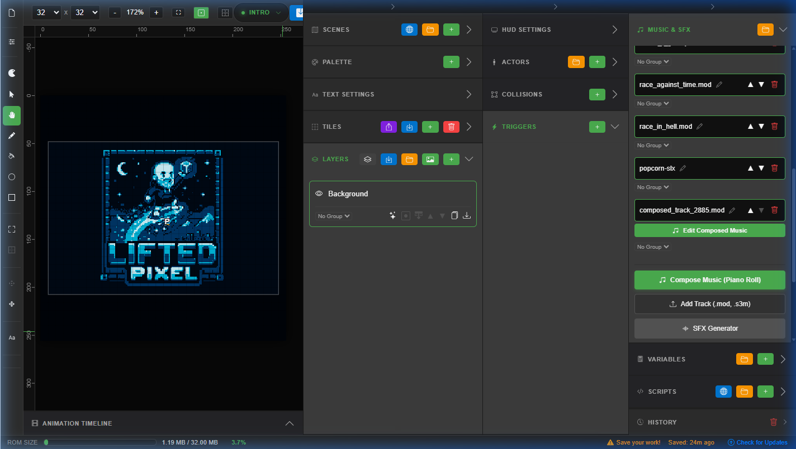
| Segment Name | Location | Core Function |
|---|---|---|
| Toolbar | Left side strip | Art tools (Pen, selection shapes, bucket, mirror modes) |
| Side Editors | Three-column panels | Layout managers (Scenes, Tiles, Layers, Actors, Triggers, Music, Script Graphs) |
| Canvas | Center main workspace | Active layout workspace, collision mapping, actor positioning, visual drawing |
| Header Control | Top bar | File actions, Play emulation testing, Compile trigger, and configuration settings |
Header Controls
The top header contains the principal tools for managing compile outputs and running your GBA game:
- File Menu: Access new project options, open project files (`.pxg`), save, export individual tiles/assets to `.png` graphics, and launch the Welcome Tour guide.
- Project Wizard: A bulk level creation script that prompts you for scene types (e.g. 2 Top-Down levels, 1 SHMUP boss scene, a Pause scene) and constructs them instantly with starter layouts.
- Level Generator: Opens a procedural generation panel (robot icon) to create cave systems, top-down paths, floating-platform arrays, or loop racing tracks in seconds.
- Play Button: Loads a built-in browser-based GBA emulator (Iodine-GBA) so you can playtest scripts, gravity variables, and hitboxes immediately. Press Esc to exit.
- Compile Button: Builds your project. Zips source trees and requests the compilation API to generate a native GBA binary, portable HTML5 bundle, or Windows executable.
Left Toolbar (Drawing Tools)
The left vertical strip houses the visual creation kit for editing GBA tiles and backdrops:
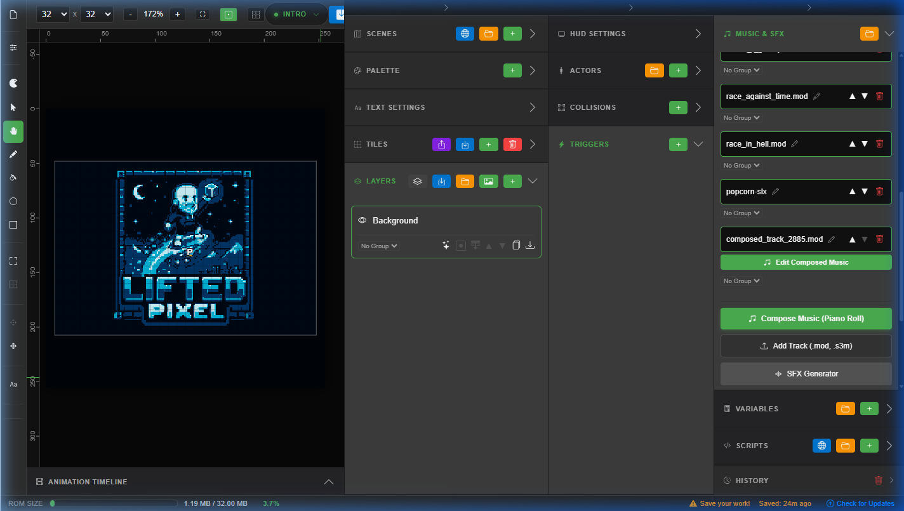
- Pen Tool: Draws individual pixels (size: 1x1). Essential for detail work.
- Brush Tool: Colors larger swatches. Brush size can be configured dynamically.
- Eraser Tool: Removes pixels (making them transparent). Note: transparent pixels are ignored by tileset compilers.
- Fill Bucket: Fills solid color blocks bounded by edges.
- Gradient Tool: Fills areas with smooth, configurable HSL transitions.
- Shape Tools (Line, Rect, Circle, Triangle): Creates geometric vectors snapped to pixel grids.
- Selection Tools (Rectangle, Lasso, Magic Wand): Selects boundaries to move, duplicate, shift, copy, or recolor.
- Symmetry (Vertical / Horizontal): Mirrors drawing strokes across the axes. Highly useful for character faces or symmetrical platform blocks.
Canvas & Drawing
The center canvas represents your direct workspace viewport. It adapts dynamically based on what tool is active:
- Brush / Drawing Mode: Allows paint operations directly on selected tile sheets or backdrops.
- Stamp Mode: Active when a Tile is selected. Stamp tiles over background grids to build levels.
- Collision Paint Mode: Paints colored collision blocks (Solid walls, slopes, ladders) over visible background layers.
- Trigger Place Mode: Draws rectangular trigger zones.
Keyboard & Mouse Shortcuts
- Space + Left Drag or Middle Mouse Drag: Pans the viewport.
- Mouse Wheel Scroll: Zoom in and zoom out on the canvas.
- Ctrl + Z / Ctrl + Y: Undo and Redo operations (supported for tile draws, actor movements, scene changes).
- Esc: Returns to the basic pointer tool and cancels placement previews.
Scenes Panel (Game Levels)
A Scene represents a separate level or screen layout inside your game.
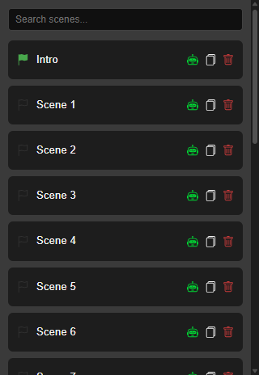
Global Scene Configuration & Logic Settings
- Scene Type: Sets how inputs, movement engines, camera loops, and graphics behave.
- Starting Flag (Flag Icon): Marks which scene boots first when compiling. Only one scene can be the Starting Scene.
- Level Size: Set in grid cells (width x height). A default scene is 30 x 20 tiles.
- Gravity: Applied only in Platformer and Beat 'Em Up modes. Defaults to `0.5`.
- Horizontal Scroll Speed: (SHMUP / Racing) The auto-scroll speed of the camera.
The 8 Scene Types Explained
- Top-Down: Classic adventure style (Zelda, Pokémon). Movement along X/Y coordinates without gravity.
- Platformer: Side-scrolling engine (Mario, Sonic). Features active gravity, jump variables, ground bounds, and ladders.
- Metroidvania: Expansive platforming with multi-connected screen borders and persistent door-key check flags.
- Shoot 'Em Up (SHMUP): Autoscrolling vertical or horizontal shooters. Player moves anywhere on screen and fires projectiles.
- Racing: Mode-7 scaling racing mode. Features 3D track rotation, time tracking, speed boosters, and lap counts.
- Point & Click: Displays a hardware pointer/cursor. Scripts check hover and click actions over actors.
- Beat 'Em Up: Platformer physics but allows depth traversal (Z-axis movement) and custom melee attack hitboxes.
- Intro / Logo Screen: Special non-actor splash screens. Designed to skip logic checks and transition directly to the next scene on button presses.
- Pause Screen: An overlay screen that interrupts standard scene engines on Start button press.
Tiles Panel (Scenery & Collisions)
Tiles are the fundamental 8x8 pixel blocks used to compose the level geometry. You draw them in the tiles editor, then stamp them across layers.
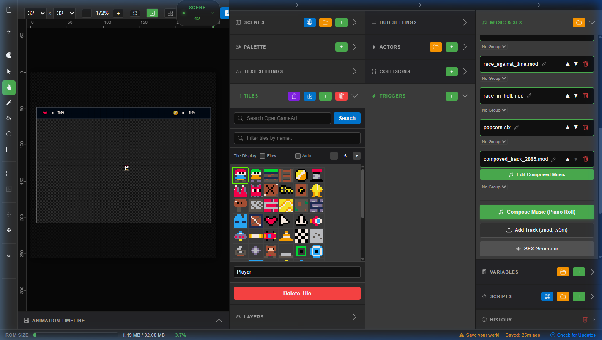
Custom Collision Overlays
While visual layers describe how the game looks, collision masks determine how actors physically interact with the level:
| Collision Type | Color | Physical Behavior |
|---|---|---|
| Solid | Red | Impassable walls, floors, and ceilings. Blocks all motion. |
| Slope | Purple | Angled walking surfaces. Handles Y coordinates dynamically. |
| Ladder | Yellow | Allows climbing on vertical axis (ignores gravity when climbing). |
| Hazard | Orange | Damages player on overlap. Triggers Player Death script. |
| Ice | Light Blue | Slippery surfaces. Drastically reduces friction variables. |
| Jump-Through | Green | One-way platforms. Player can jump upwards through the bottom but lands on top. |
Layers Panel (Background Limits)
Layers let you stack graphic grids. For example, a sky backdrop, parallax trees, a platforms grid, and foreground flowers.
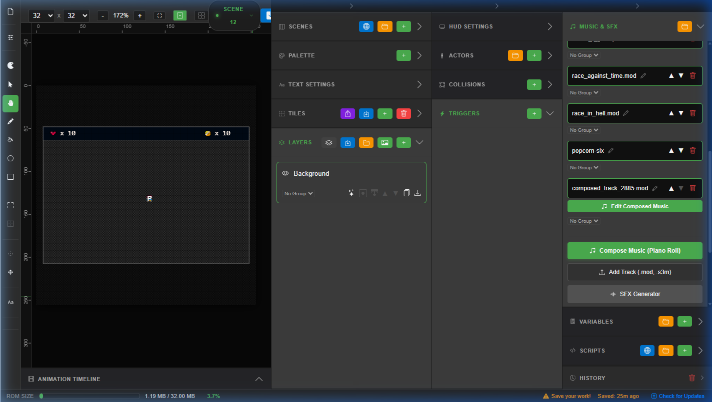
Strict Hardware Background Limit
The GBA hardware supports a maximum of 4 background layers in tiled mode. To safeguard compilation success, PxGBA operates a built-in constraint checking system:
- Max 3 background layers if the HUD is disabled.
- Max 2 background layers if the HUD is enabled.
- 1 layer is always reserved internally for dialogs, text boxes, and menus.
If you build a scene that exceeds these layers, the Play testing system will show a layout warning and block ROM compilation until you merge or delete layers.
Smart Actors Panel
Actors represent the active entities in your GBA game. Unlike static background tiles, actors have speeds, behaviors, logic loops, and visual scripts bound to them.
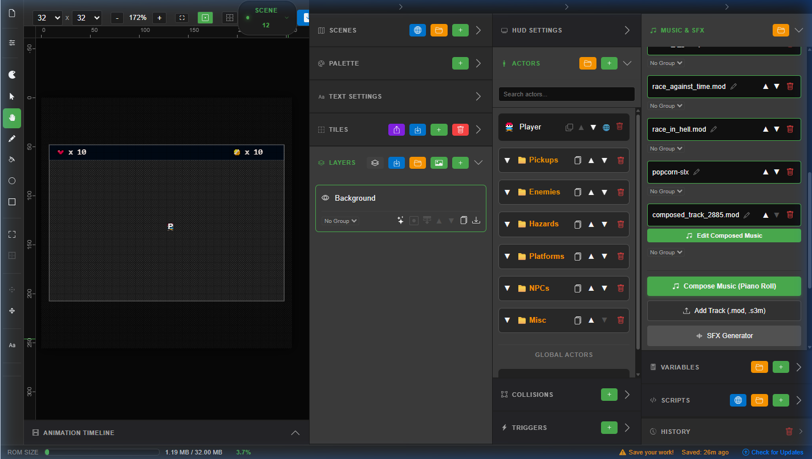
- Scene Actors: Local entities that exist only within a specific scene.
- Global Actors: Shared actors (like the Player or Companion) whose visual assets and properties are configured once but can be spawned across all scenes. Note: their X and Y positions are configured separately per scene.
- Design Sprite: Opens a dedicated pixel editor to design custom animations, attack frames, and movement sprites.
Triggers Panel (Event Zones)
Triggers are invisible rectangular areas painted on the canvas. When an actor (usually the player) crosses the boundary, it triggers an event.
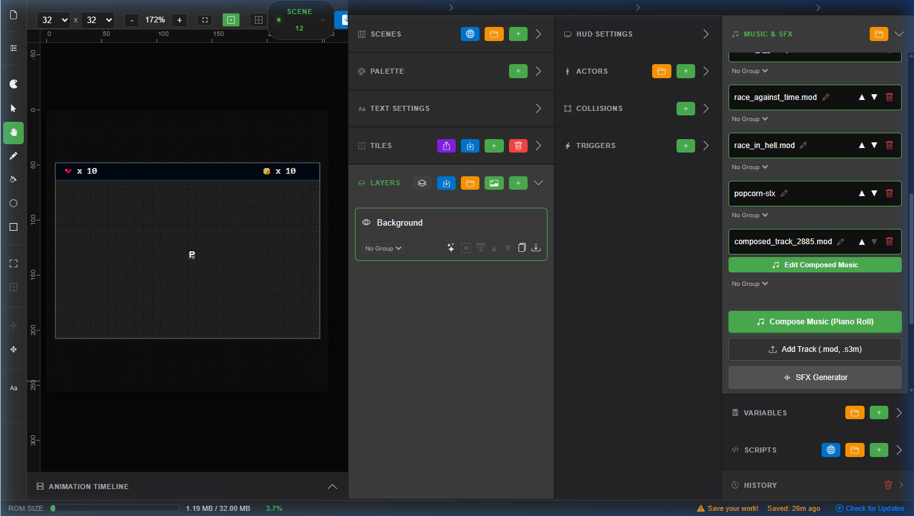
- Activation Types: On Enter (first touch) or On Exit (leaves boundary).
- Trigger Script: Connects to a custom script node layout. Used to swap levels (doors/warps), activate cutscenes, spawn boss enemies, or play audio markers.
Variables Panel (Global Game State)
Variables store numbers, text, or true/false toggles across scene loads (e.g. player health, keys collected, story flags).
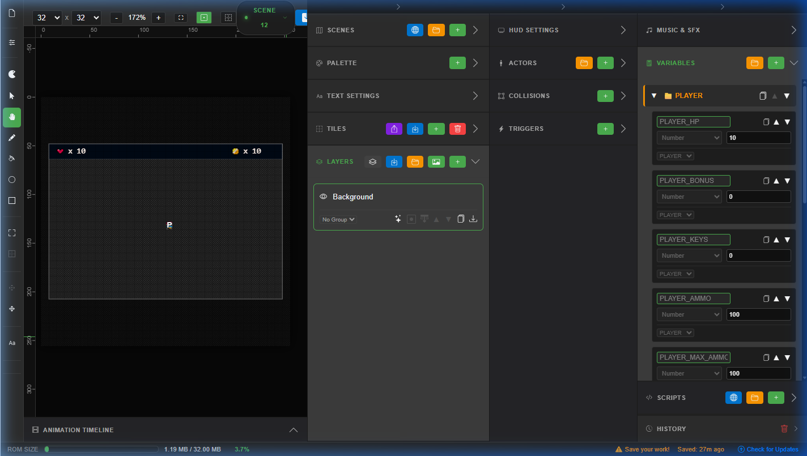
- Numbers: High scores, health points, currency trackers.
- Strings: Text arrays (like custom player names) referenced in dialog nodes.
- Booleans: Flags (e.g. `hasKey`, `isBossDead`, `gameStarted`).
- Binding to Actors: Many actor fields (like positions, projectile speeds, active states) can be bound directly to global variables instead of constant values. Use the green [V] button in the UI next to parameters.
Music Panel (Audio & Composition)
PxGBA features a complete music and sound effect production suite built directly into the editor. You can compose original chiptune tracks with a piano roll sequencer, generate sound effects, import tracker modules from ModArchive, and organize everything into groups for scene assignment.
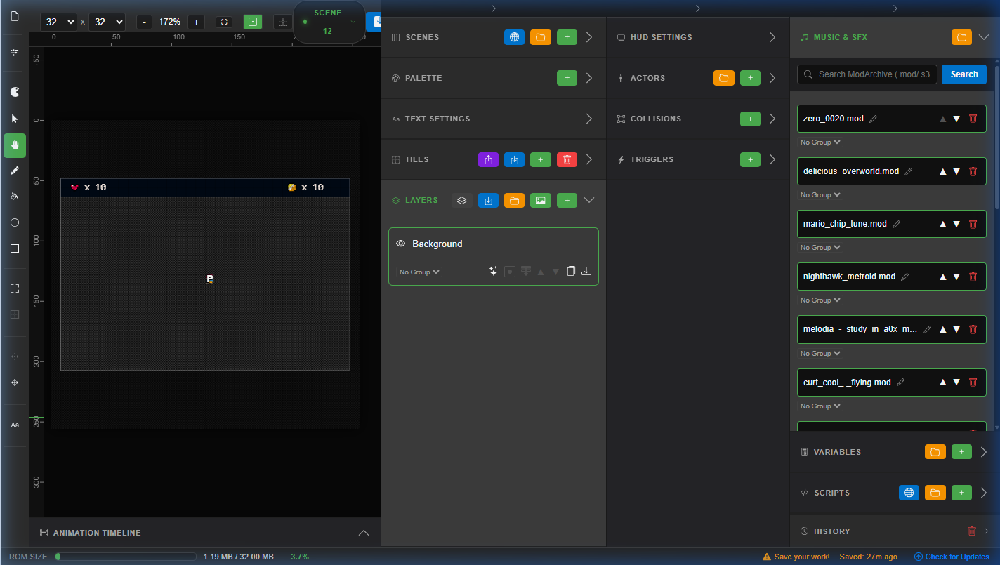
GBA Audio Hardware Limits
The Game Boy Advance has 4 hardware channels for direct sound (2 pulse/square, 1 wave/arbitrary, 1 noise). For ROM compatibility, PxGBA's composed tracks and imported MOD files must use 4-channel setups. Tracks exceeding this limit will fail to compile correctly on real hardware.
Music Panel Overview
The Music Panel (found in the right sidebar under "Music & SFX") is the central hub for managing all audio assets in your project. It provides:
- Track List: Displays all imported and composed tracks with their names, types, and group assignments.
- Search ModArchive: A search bar that queries ModArchive.org for
.modand.s3mtracker files you can import directly. - Compose Music (Piano Roll): Opens the built-in 4-channel sequencer to create original chiptune compositions.
- Add Track: Upload
.mod,.s3m,.xm, or.itfiles from your computer. - SFX Generator: A quick-synth tool for generating simple sound effects (jumps, coins, lasers, hits) as WAV files.
- Group Folders: Organize tracks into colored group folders for cleaner project management.
Track Management
Each track in the list displays its name, a format indicator (green border for music tracks, magenta for SFX), and action buttons:
- Rename: Click the pencil icon to rename a track inline. Extensions are preserved automatically.
- Reorder: Use the ▲ and ▼ buttons to change playback/display order.
- Delete: Removes the track from the project (shown with a red trash icon).
- Play SFX: For sound effects, a play/pause button lets you preview the audio directly in the panel.
- Edit Composed Music: For tracks created with the piano roll, a green "Edit Composed Music" button reopens the sequencer.
- Group Assignment: Each track can be assigned to a group via the dropdown selector, keeping related tracks organized together.
Group Folders
Click the folder icon (+ with folder symbol) in the panel header to create a new group. Groups appear with an orange left border and can be expanded/collapsed. Tracks assigned to a group are hidden when the group is collapsed, keeping the list tidy. Groups can be renamed by double-clicking the group name, reordered, or deleted (which removes all assigned tracks along with the group).
Piano Roll Sequencer (Music Editor)
The Music Editor is a full-featured piano roll sequencer designed for composing authentic chiptune music. It opens as a full-screen modal when you click "Compose Music" or "Edit Composed Music" on an existing composition track.
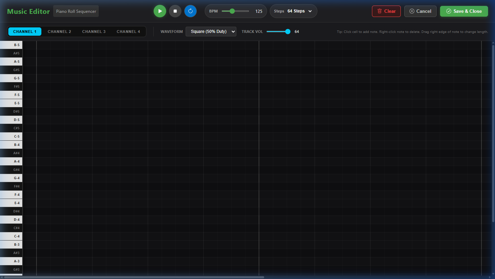
Interface Layout
- Header Bar: Contains the editor title, playback controls (play/pause/stop/loop), BPM slider, song length selector, and action buttons (Clear, Cancel, Save & Close).
- Synth Configuration Bar: Channel tab switches (Channel 1-4), waveform selector for the active channel, and a per-channel volume slider.
- Piano Keys: A sticky left column showing 36 notes (C3 to B5, 3 octaves) with labeled key names. Click a key to preview the current channel's waveform and volume.
- Note Grid: The main scrollable grid where notes are placed. Columns represent 16th-note steps, rows represent pitch. Gridlines show beat divisions (every 4 steps) and bar divisions (every 16 steps).
- Playhead: A red vertical line that moves across the grid during playback, showing the current position.
Channel System
The sequencer provides 4 independent channels, matching the GBA's hardware audio capabilities. Each channel can be configured independently:
| Channel | Default Waveform | Color | Notes |
|---|---|---|---|
| Channel 1 | Square (50% Duty) | Cyan | Primary melody channel |
| Channel 2 | Pulse (25% Duty) | Purple | Harmony or counter-melody |
| Channel 3 | Triangle | Green | Bass lines and low frequencies |
| Channel 4 | Noise (Percussion) | Orange | Percussion only — waveform is fixed to Noise |
Switch between channels by clicking the channel tabs in the synth bar. Notes on inactive channels appear as ghost notes (faint, semi-transparent) for reference while editing the active channel.
Waveform Types
Each channel (except Channel 4, which is fixed to Noise) can use any of the following synthesized waveforms:
| Waveform | ID | Character | Typical Use |
|---|---|---|---|
| Square (50% Duty) | square | Classic chiptune buzz | Lead melodies, bass |
| Pulse (25% Duty) | pulse25 | Thinner, brighter square | Arpeggios, counter-melodies |
| Pulse (12.5% Duty) | pulse125 | Very thin, nasal | Percussive accents, chirps |
| Triangle | triangle | Soft, hollow, mellow | Bass lines, pad-like parts |
| Sawtooth | sawtooth | Bright, rich in harmonics | Bass leads, 'dirty' sounds |
| Sine | sine | Pure, smooth tone | Sound effects, soft basses |
| Noise (Percussion) | noise | White noise with bandpass filter sweep | Hi-hats, snares, crashes, percussion |
Waveforms are synthesized in real-time using the Web Audio API with Fourier-generated periodic waves and ADSR envelopes (2ms attack, 15ms release) to prevent clicks.
Note Editing
- Place a Note: Click any cell in the grid to place a note at that step and pitch on the active channel. The default duration is 2 steps (an 8th note). The note is previewed audibly on placement.
- Remove a Note: Click an existing note on the active channel to delete it, or right-click any note (even on inactive channels) for a context-menu delete.
- Move a Note: Click and drag any note block to reposition it. Drag horizontally to change the step position, vertically to change pitch. The pitch is previewed as you drag over new rows. Overlapping notes on the same step/channel are automatically removed.
- Resize a Note: Drag the right edge of any note block to change its duration. Minimum duration is 1 step (a 16th note). The note cannot extend beyond the song length boundary.
- Clear All: The "Clear" button in the header removes all notes after a confirmation prompt.
Playback Controls
- Play (green button): Starts playback from the current playhead position, or from the beginning if stopped.
- Pause (amber button): Pauses playback without resetting the playhead position. Press Play to resume.
- Stop (gray button): Stops playback and resets the playhead to the beginning.
- Loop (toggle button): When active (blue), playback loops continuously from end to start. When inactive, playback stops at the end of the song.
- BPM Slider: Sets the tempo from 60 to 240 BPM. The step duration is calculated as
60 / BPM / 4seconds (one 16th note). - Steps Selector: Sets the song length to 32, 64, 128, or 256 steps. Notes extending past the new boundary are trimmed automatically.
- Track Volume: Each channel has an independent volume slider (0-64) that controls output gain during playback.
Save and Export
When you click Save & Close, the sequencer:
- Serializes your composition into a binary ProTracker MOD format file using the
modSerializerutility. - Generates 6 waveform-based instruments (Square 50%, Pulse 25%, Triangle, Sawtooth, Noise, Sine) as raw 8-bit PCM samples in the MOD file.
- Writes the BPM as a pattern effect command (0xF) at row 0 of pattern 0.
- Applies note-cut effects (C00) at note duration boundaries to ensure clean note-off events.
- Saves the composition data (notes, BPM, song length, waveforms, volumes) as
composerDataso you can reopen and edit later. - Stores the track as a base64-encoded data URL in your project's
musicTracksstate.
SFX Generator
The SFX Generator is a quick-synth tool for creating simple sound effects without leaving the editor. Open it by clicking the SFX Generator button at the bottom of the Music Panel.
| Parameter | Range | Description |
|---|---|---|
| Waveform | Square, Sine, Sawtooth, Noise | The base waveform type. Square gives classic blips/jumps, Sine is smooth (coin sounds), Sawtooth is harsh (lasers), Noise is for crashes/hits. |
| Frequency | 50 - 2000 Hz | Pitch of the sound effect. Lower values for thuds/impacts, higher values for pings/laser zaps. |
| Length | 50 - 1000 ms | Duration of the sound effect in milliseconds. |
| Fade Out | On / Off | When enabled, applies a smooth volume fade-out envelope to prevent click artifacts at the end of the sound. |
- Play: Preview the sound effect using the current parameters.
- Save: Saves the SFX as a WAV file (16 kHz, 8-bit, mono) in your project's track list with the name format
sfx_{type}_{freq}Hz.wav. The generation parameters are stored assfxParamsmetadata.
ModArchive Integration
PxGBA provides built-in searching and importing of tracker music from ModArchive.org, the internet's largest collection of module files. This integration lets you find and use high-quality chiptune music in your GBA games.
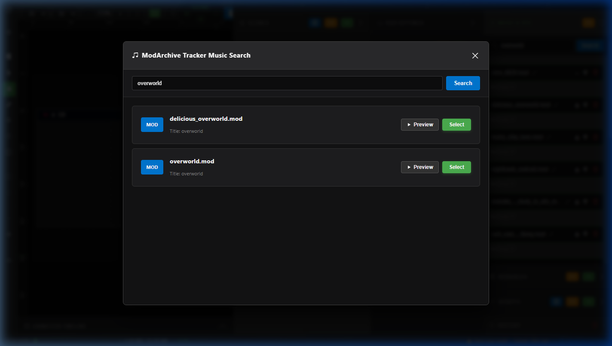
Searching
- Type a keyword (e.g. "overworld", "castle", "boss", "dungeon") in the search bar at the top of the Music Panel and click Search (or press Enter).
- A modal opens showing matching results from ModArchive, filtered to only MOD and S3M formats (IT, XM, and other formats are excluded for GBA compatibility).
- Each result shows the filename, format badge, title, and artist name (when discoverable).
Preview Player
Each search result has an inline preview player powered by libopenmpt (via a WASM-based Web Audio player):
- Click Preview to stream and play the module directly from ModArchive through the proxy.
- The player displays the track title, a seekable progress bar, and time elapsed/duration.
- Use the play/pause button on the player to control preview playback.
- Click Stop (the preview button turns red) to stop playback.
Importing
- Click Select on any search result to download and import the module into your project.
- The artist name is automatically resolved (including a secondary fetch to the module's detail page if needed) and tracked for credit attribution via the
includedArtistsstate. - Imported tracks are stored as base64 data URLs and tagged as
isComposed: false. - Artist credits are automatically prepended to the filename for easy attribution tracking.
Local File Import
You can also import tracker files from your local computer by clicking Add Track. Supported formats: .mod, .s3m, .xm, .it. The file is read as a base64 data URL and added to your project's track list.
Compilation & Audio Pipeline
When you compile your game, PxGBA's code generation system (in src/context/codegen/butano.js) handles all audio assets:
- Composed tracks are re-serialized via
serializeToMod()and placed as.modfiles in theaudio/folder of the generated C++ project. - Imported tracks are decoded from base64 data URLs and written as
.mod,.s3m,.xm, or.itfiles. - Sound effects from the SFX Generator are exported as WAV files (16 kHz, 8-bit, mono) into the
audio/folder. - Script node SFX: When a "Play Sound" visual script node references an SFX asset, the WAV data is extracted and included. If the node has inline wave type/frequency/duration parameters, a WAV is generated on-the-fly via
generateWav(). - Butano C++ integration: The generated code uses
bn::music_items::<name>.play()for background music andbn::sound_items::<name>.play()for sound effects. - Music control: Visual script nodes for "Music Control" can pause, resume, or stop background music during gameplay.
Actor Global Properties
Every actor shares a core set of properties accessible in the properties column:
- Name: Descript label.
- X / Y coordinates: Placed tile coordinates. Can toggle variable binding (useVarX / useVarY).
- Scale X / Scale Y: Sprite scale value. Bindable to variables.
- Angle: Degree of rotation. Bindable to variables.
- Opacity: Transparency. Bindable to variables.
- Color Tint: Colors solid blocks or textures.
- Dimensions (W x H): Typically default 8x8 pixels. Can resize to larger square or rect boundaries.
- Sprite (spriteId / spriteIds): Sets individual tiles or arrays of tiles representing the animations.
- Is Moving: Checkbox enabling movement paths. Includes:
- Move Dir: Horizontal, Vertical, Bounce (arcs), Sine, Zigzag, Random.
- Range (px): Max range of travel.
- Speed: Step increments per frame.
- On Hit: Custom script node graph triggered when hit.
- On Interact: Script triggered when player approaches and presses the interaction button (A).
Detailed Actor Behaviors
PxGBA features 40+ pre-coded actor types. Choosing a type configures its physics and adds unique UI fields:
Node-Based Scripting
Instead of typing C++ code, you build logic structures inside the visual script editor. Open the graph canvas by clicking Edit Visual Graph on any scene, actor, or trigger.
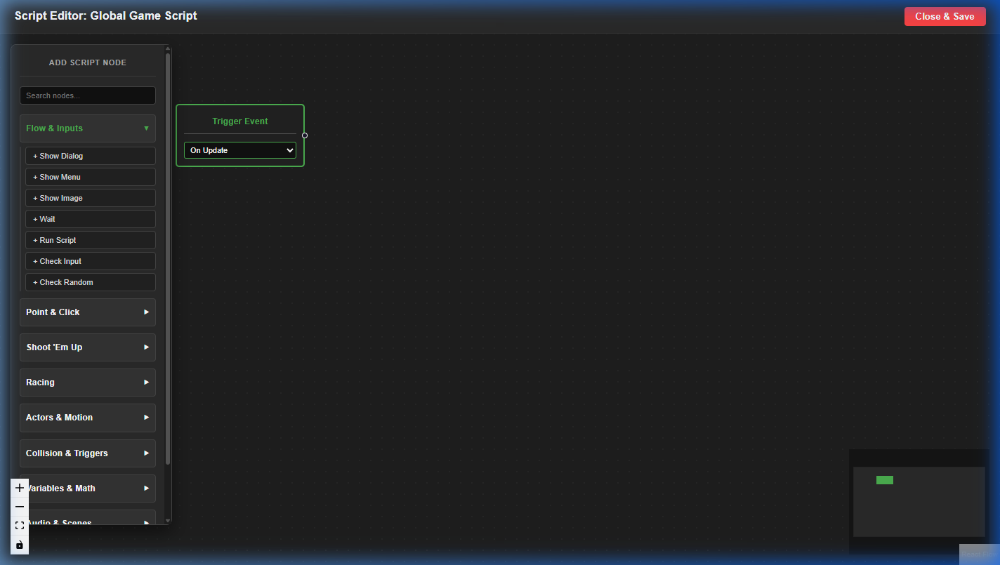
Connection Protocols
- Entry Point (customStart): Every script graph contains a single blue Start Node. You must connect the output handle of the Start node to your logic nodes. Unconnected nodes are discarded during compilation.
- Sequence Flow: Left-to-right connections describe serial action triggers.
- Branching Paths (If/Then): Nodes that verify conditions (Check Variable, Check Input, Check Collision) feature dual output handles: True (Green) and False (Red). Connect handles to branch execution paths.
- Menu Options: The Show Menu node features dynamic handles representing user-clickable selections.
Detailed Script Node Reference
Here is the itemized list of all scripting node actions, sorted by visual palette groups:
Flow & Inputs
- Show Dialog (`dialog`): Pauses game movement, displaying a dialog window at the bottom of the screen. Features text overlays and optional actor portrait icons.
- Show Menu (`menu`): Prompts users with a scrollable list of choice options. Generates dynamic outgoing connections for each option.
- Show Image (`show_image`): Renders a fullscreen raw image. Ideal for title screens or cutscenes.
- Wait (`wait`): Pauses scripting execution for a fixed number of frames before firing the next node.
- Run Script (`run_script`): Invokes a reusable visual script compiled globally.
- Check Input (`check_input`): Evaluates if specific GBA buttons (A, B, L, R, Up, Down, Left, Right, Start, Select) are currently Pressed, Held, or Released.
- Check Random (`check_random`): Splitting execution flow based on a percentage chance check.
Point & Click
- Check Hovering Actor (`check_hover`): Queries if the user's cursor pointer is hovering over a target actor hitbox.
- Get Cursor Position (`get_cursor_pos`): Saves pointer screen coordinates into variables.
- Set Cursor Position (`set_cursor_pos`): Warps the cursor pointer coordinates.
- Set Pointer Visibility (`set_pointer_visible`): Hides or shows the cursor pointer sprite on screen.
Shoot 'Em Up (SHMUP)
- Set Scroll Speed (`set_scroll_speed`): Modifies the level autoscrolling speed variable.
- Set Actor Rotation (`set_actor_rotation`): Sets an actor sprite rotation angle (in degrees).
- Set Actor Scale (`set_actor_scale`): Sets actor scale metrics dynamically.
Racing
- Set Car Speed (`set_car_speed`): Sets a target vehicle's movement speed.
- Set Car Steering (`set_car_steering`): Alters steering responsiveness parameters.
Actors & Motion
- Move Actor (`move`): Interpolates an actor's coordinates to target X/Y coordinates.
- Spawn Actor (`spawn_actor`): Spawns an actor into the scene.
- Destroy Actor (`destroy_actor`): Deletes an actor instance from memory.
- Play Animation (`play_animation`): Loops a selected animation sequence on an actor.
- Shoot Projectile (`shoot_projectile`): Fires a projectile from an actor toward directions, vectors, or other target coordinates.
Collision & Triggers
- Check Collision (`check_collision`): Evaluates if two actors collide.
- Check Proj Hit (`check_proj_hit`): Evaluates if a projectile hits an actor's hitbox.
- Check Boundary (`check_map_boundary`): Evaluates if an actor touches scene limits.
- Check Distance (`check_distance`): Evaluates if the pixel distance between two actors is less than/greater than a threshold.
Variables & Math
- Set Variable (`set_var`): Updates a global variable to a specific value.
- Check Variable (`check_var`): Compares a variable against a threshold (equal, less than, greater than).
- Math Operation (`math_operation`): Modifies a variable (addition, subtraction, multiplication, division).
- Set Random Var (`set_random_var`): Sets a variable to a random number within limits.
- Math Equation (`math_equation`): Evaluates complex formulas (e.g. `Score = Coins * 10 + Time`).
Audio & Scenes
- Play Sound (`sound`): Plays short sound effects.
- Music Control (`music_control`): Starts, stops, pauses, or swaps tracker-based chiptunes.
- Change Scene (`change_scene`): Transitions to a different scene, warping the player to specified warp coordinates.
- Set BG Color (`set_bg_color`): Overrides the background clear color.
- Move Camera (`move_camera`): Locks the screen viewport camera to specific coordinates or actor focal points.
Game State
- Save Game (`save_game`): Writes persistent game variables to the GBA cartridge SRAM.
- Load Game (`load_game`): Reads and applies values from the SRAM.
- Restart Game (`restart_game`): Resets the game CPU loop.
ROM Compilation & Backend API
When triggering compilation, the Electron frontend packages your project workspace and submits a ZIP file via a local Express API (`http://localhost:3001` by default).
1. `POST /compile`
Initiates an async compilation job. Form payload options include:
project: The project binary ZIP file.html5: Set"true"to package a web player.exe: Set"true"to package a portable Windows emulator bundle (mGBA).
2. Offline Mocking System
If you are offline or network connections to OpenGameArt/ModArchive fail, the Express server automatically routes mock local fallback assets (such as placeholders and test chiptunes) to bypass network errors.
VPS Compilation Server Deployment
If you want to deploy a dedicated build server on Linux, you can run the Express API on a VPS. Follow this deployment outline:
Step 1: Install VPS Tools
Copysudo apt update && sudo apt upgrade -y
sudo apt install -y build-essential git wget curl python3
Step 2: Install Node.js 20
Copycurl -fsSL https://deb.nodesource.com/setup_20.x | sudo -E flex -
sudo apt-get install -y nodejs
Step 3: Extract devkitPro Toolchain via Docker
Bypassing Cloudflare Blocks
devkitPro downloads are protected by Cloudflare WAF which blocks server queries. You must pull their official Docker container and copy the pre-built toolchain natively to your host VPS instead of installing it via dkp-pacman:
Copy# Start a temp container
sudo docker run -d --name dkp-temp devkitpro/devkitarm tail -f /dev/null
# Copy the compiled directory
sudo mkdir -p /opt
sudo docker cp dkp-temp:/opt/devkitpro /opt
# Cleanup Docker
sudo docker rm -f dkp-temp
Step 4: Keep Process Active with PM2
Copysudo npm install -g pm2
pm2 start server.js --name "gba-build-server"
pm2 startup
pm2 save
Strict GBA Hardware Limitations
Because the GBA is limited compared to modern platforms, you must strictly follow these constraints. Exceeding these limits will result in compiler errors or graphical glitches:
- Colors (Palettes): All tile sheets and actor sprite frames MUST be limited to a maximum of 16 colors (15 visible colors + 1 transparent color background). Ensure all imported images are converted to indexed color formats prior to compile.
- Background Layers: Max 4 layers total. You are limited to 3 scenery layers with HUD disabled, or 2 scenery layers with HUD active, since 1 layer is reserved for dialogue.
- OAM Sprite Count: The GBA can only render 128 hardware sprites on the screen at one time. If you spawn too many actors close together, sprites will flicker or disappear.
- Dimensions Snapping: Actor hitboxes and sprite sizes must snap to GBA-valid grid boxes (e.g. 8x8, 16x16, 32x32, 64x64, 16x8, 32x16).
- Audio Track Limit: ModArchive `.mod` tracks must only use standard 4-channel setups. Complex stereo modules with 8+ channels will trigger devkitARM compiler failures due to sound format translation limits.
Troubleshooting & Errors
Refer to this table to diagnose and resolve compiler errors or editor failures:
| Observed Problem | Underlying Cause | Remediation Step |
|---|---|---|
make command not found |
Missing system build utilities or devkitARM environment vars are unset. | Run npm run desktop:setup to extract the bundled compilers. |
| CORS blocks on search | Calling search APIs from a standard browser tab instead of inside Electron. | Ensure the local API server is running on port 3001 and Electron is launched. |
| White screen on Electron launch | React frontend files are missing or haven't been compiled. | Run npm run build in the project directory before launching Electron packaging. |
| ROM size bar exceeds 100% | Asset footprint (music, backdrops) is too large for GBA memory size. | Optimize background layers, convert mod audio to lower sampling rates, or delete redundant scene frames. |
| Compilation fails on background import | Background PNG uses too many colors or has non-indexed palette profiles. | Convert backdrops to 15-color indexed PNG palettes before saving. |
Design Tips & Tricks
Maximize GBA hardware capability using these developer guidelines:
- Leverage the Level Generator: Prototype level boundaries rapidly with the Level Generator, then refine with customized detail stamps.
- Reduce Unique Tiles: The GBA VRAM only holds a limited number of unique tiles. Reuse patterns (like grass patches and stone blocks) instead of drawing unique details on every square foot of the level.
- Optimize Collision Paint: Avoid painting large chunks of solid collisions. Paint thin boundary lines on borders to save GBA CPU logic processing steps.
- Stagger Spawners: Stagger spawners using timer scripts or delay counters to prevent OAM sprite overflows.